Generated 2026-10-06 from line_model.py. A redesign of the fischertechnik 536634 factory
for continuous, per-flavour production: one chain loop that never stops, every process on the fly,
no single robot in the critical path.
| 536634 factory (today) | STF-2 continuous line | |
|---|---|---|
| Flow | stop-and-go; every machine starts/stops per workpiece | one chain loop that never stops; takt 4.0 s |
| Transfers | one VGR serves belt, oven and 3 bays (single point of failure) | fixed stations on the loop; two delta pickers, either alone carries the line (N+1) |
| Oven | batch: door, slider, one part at a time | real band oven: plain dough on a 6-row stainless mesh band, 3 zones 210 / 200 / 185 C, bake 265 s (oven.py: core, water, colour), impingement cooling 155 s; the plastic puck chain never enters the heat |
| Processing | turntable indexes under the saw | thumbprint topping before the oven: rows k, k+3 get flavour k; delta C moves each cookie from the band to a puck |
| Sorting / storage | colour sensor + ejectors into bays; 12-slot AS/RS | product carries its recipe (NFC); vision QC; per-flavour box lanes into tall pack cassettes, exchanged by AMR through an airlock |
| Stock | 12 workpieces in the rack | dough hopper 15 kg (89 min), 3 topping hoppers, finished cassettes of 81; the AMR loop makes it unlimited (proven below) |
| Failure behaviour | any machine down = factory down | losses, never stops: a missed cookie recirculates, a cookie the transfer cannot place falls into the crumb pan, no dough leaves empty band rows |
Proven on the exact CAD (line_cad.containment): every cookie sits in its pocket or tube, every stack on its
pawls, zero overlap, and nothing blocks a cassette outlet. Negative tests (pocket too small, stack off its pawls, a handle
across the outlet) are all caught.
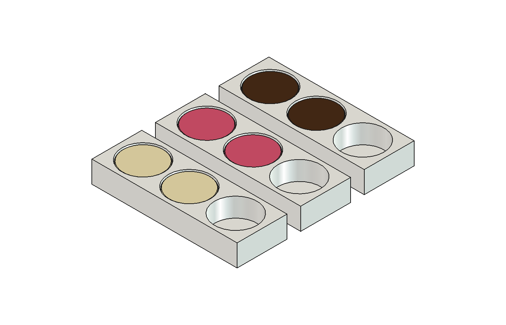
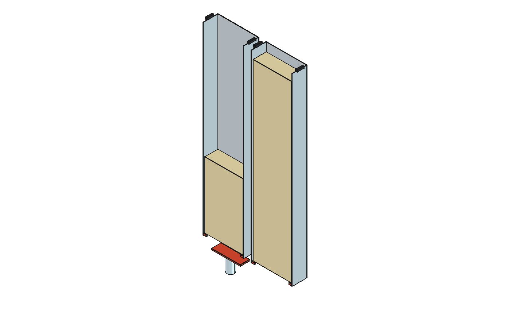
One FreeCAD document + STEP per module and the assembly in
~/workspace/stf-factory/cad/line2/ (built by line_cad.py).
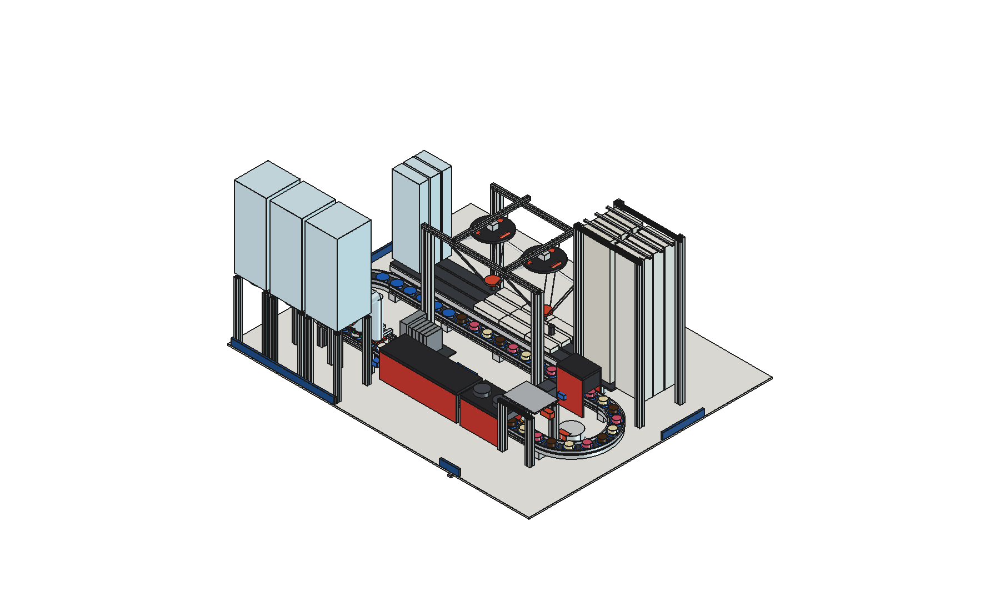
| check | value | limit | note | |
|---|---|---|---|---|
| ✅ | takt (P / v) | 4.00 s | 900 cookies/h, 300 per flavour at 1:1:1 | |
| ✅ | loop closes | N*P - (2S + 2piR) = -0.04 mm | |..| <= take-up 5 | S on the 0.1 mm grid; the drive unit's take-up absorbs the rest |
| ✅ | flavour rows on the band | 6 rows, 3 flavours | rows % flavours == 0, MIX 1:1:1 | row k carries flavour k mod 3: delta C picks a row in order -> W R B W R B on the loop |
| ✅ | band speed | 2.292 mm/s | one row of 6 per 24 s | 55 mm row pitch; electronically geared to the master axis |
| ✅ | bake (oven.py, 1-D + evaporation) | 265 s: core >= 95 C for 186 s, water 4.6%, colour 1.08 | hold >= 60 s, water <= 5%, colour 0.8..1.3 | the shortest residence that bakes it; the band length follows from it |
| ✅ | oven length | 3 zones x 203 mm | = 2.292 mm/s x 265 s | zones 210 / 200 / 185 C |
| ✅ | band cooling | hood 356 mm = 155 s -> max 39.8 C at the pick window | <= T_TRANSFER 40 C | impingement hood 90/70 W/m2K |
| ✅ | row emptied in the pick window | 30.5 s | >= 6 takts = 24 s | delta C takes one cookie per takt; a row never reaches the nose |
| ✅ | transfer capacity, delta C | 0.50 /s | >= demand 0.25 /s | single transfer: a miss falls into the crumb pan (counted loss) - the band cannot stop with the oven hot |
| ✅ | place window on the bend | 98 mm = 4.9 s | >= reach+grip 0.8 s | delta C tracks the puck along the arc (IK at 7 points) |
| ✅ | cookie at the picker | max 37.4 C after 68 s on the loop | <= T_PACK 38 C | a warm cookie sealed in film sweats (condensate in the pack) |
| ✅ | band unit fits | y 115..625, x 60..1669 | guard y >= 84, portal y0 672, x <= curve | raised over the loop's front run: the chain stays out of the heat |
| ✅ | QC verdict before the kicker | 5.5 s of travel | >= AI latency 0.5 s | camera -> kicker distance / v |
| ✅ | reject kick | stroke 0.2 s | cookie under paddle 2.0 s | |
| ✅ | kick reaches the funnel | needs 88.5 mm | stroke 100 = cylinder 100 | paddle pushes the cookie centre over the funnel centre |
| ✅ | pick capacity, ONE delta | 0.50 /s | >= demand 0.25 /s | N+1: either delta alone carries the line |
| ✅ | tracking window per delta | 95 mm = 4.8 s | >= reach+grip 0.8 s | chord of the reach circle over the back run |
| ✅ | cookie into its pocket | radial clearance 0.75 mm | >= placement error 0.60 mm | lane index + delta repeatability + cup eccentricity: the round cookie drops into the round pocket |
| ✅ | pockets fit the tray | 148.5 mm of pockets | <= 154.0 inside the flange | 3 round cookies in a rectangular tray |
| ✅ | cookie below the film | 13.0 mm headroom | > 0 | the film never touches the cookie |
| ✅ | sealer in the index pause | 1 s | <= lane index 2 s | seals while the lane indexes the next tray in |
| ✅ | pack guided in the cassette | 3.0 mm per side | 0.5 .. 4 mm | open bottom inlet / open top outlet, walls guide the stack |
| ✅ | pawls hold the stack | engage 2 mm | <= flange 3 mm | pawls catch the tray flange; FIFO: first pack in rises to the top outlet |
| ✅ | film autonomy | 11.8 h per lane | >= 8 h shift | 2 reels x 588 packs, auto-splice; reload at shift change |
| ✅ | dough fits its hopper | 15 kg = 13.0 l | <= 80 % of 30.3 l | |
| ✅ | topping fits its hopper | 0.8 kg = 0.62 l | <= 80 % of 1.11 l | |
| ✅ | STOCK dough hopper | 15 kg | 89 min | 11.2 g per cookie, one plain dough |
| ✅ | STOCK topping hoppers | 3 x 0.8 kg | 107 min each | 1.5 g per drop |
| ✅ | STOCK finished cassette | 27 packs = 81 cookies | 16 min each | airlock exchange 30 s; a LATE robot blocks that lane (loss counted by line_sim) |
| ✅ | STOCK empty boxes | 60 boxes | 36 min | per lane |
| ✅ | STOCK rejects | 656 cookies | 14.6 h at 5 % rejects | drawer under the deck |
| ✅ | height limit | max z 900 | <= 900 | user: taller is fine |
| ✅ | airlock exchange covered by the lane-end buffer | 1 pack = 36 s | >= exchange 30 s | a robot on time costs no production: the waiting pack is lifted into the new cassette |
| ✅ | AMR call: cassette exchange | 75 s before full | >= trip 60 s | airlock: no standby buffer - a late robot blocks that lane only (line_sim counts it) |
| ✅ | AMR deadline: dough refill | 31.2 min | >= worst case ONE robot 16.5 min | all 11 port tasks queued ahead - so one AMR suffices and the 2nd is N+1 |
| ✅ | AMR deadline: topping refill | 37.3 min | >= worst case ONE robot 16.5 min | all 11 port tasks queued ahead - so one AMR suffices and the 2nd is N+1 |
| ✅ | AMR deadline: box refill | 18.0 min | >= worst case ONE robot 16.5 min | all 11 port tasks queued ahead - so one AMR suffices and the 2nd is N+1 |
| ✅ | AMR deadline: reject drawer | 262.4 min | >= worst case ONE robot 16.5 min | all 11 port tasks queued ahead - so one AMR suffices and the 2nd is N+1 |
| ✅ | cassette exchanges never coincide | staggered by a third | gap 324 s >= exchange 105 s | equal flavour rates would fill all three at once; one robot then serves them in turn |
| ✅ | AMR utilisation, one robot | 67% | < 70 % | 24.9 tasks/h |
| scenario | span | steady /h | efficiency | band lost | empty slots | blocked cass/box | AMR tasks | AMR util | max late (min) | stops |
|---|---|---|---|---|---|---|---|---|---|---|
| nominal_1h | 1 h | 854 | 0.95 | 15 | 0 | 0/0 | 29 | [0.47, 0.23] | 0.5 | 0 |
| delta_A_down_10min | 1 h | 852 | 0.95 | 15 | 0 | 0/0 | 28 | [0.43, 0.22] | 0.5 | 0 |
| both_deltas_down_2min | 1 h | 826 | 0.92 | 39 | 0 | 0/0 | 25 | [0.44, 0.2] | 0.5 | 0 |
| both_deltas_down_10min | 1 h | 690 | 0.77 | 157 | 0 | 0/0 | 21 | [0.4, 0.13] | 0.0 | 0 |
| both_deltas_down_10min_AGENT | 1 h | 559 | 0.62 | 121 | 114 | 0/0 | 17 | [0.45, 0.11] | 0.0 | 0 |
| shift_2_AMR | 8 h | 860 | 0.96 | 50 | 0 | 6/0 | 327 | [0.56, 0.39] | 1.0 | 0 |
| shift_1_AMR | 8 h | 852 | 0.95 | 102 | 0 | 65/0 | 255 | [0.74] | 2.1 | 0 |
| shift_2_AMR_one_down_2h | 8 h | 856 | 0.95 | 68 | 0 | 21/0 | 309 | [0.41, 0.49] | 1.3 | 0 |
| shift_fleet_down_15min | 8 h | 838 | 0.93 | 204 | 0 | 158/0 | 322 | [0.55, 0.38] | 14.9 | 0 |
| shift_fleet_down_45min | 8 h | 770 | 0.85 | 532 | 145 | 600/0 | 300 | [0.51, 0.36] | 44.9 | 0 |
| shift_no_AMR | 8 h | 7 | 0.01 | 1250 | 2389 | 4577/0 | 0 | [] | 0.0 | 0 |
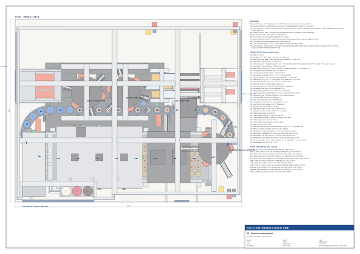
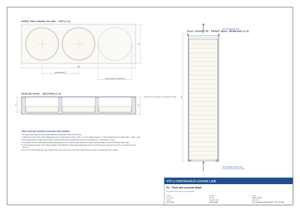
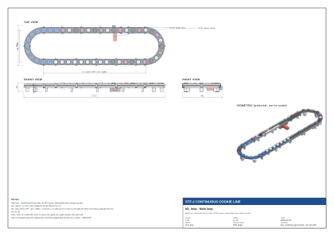
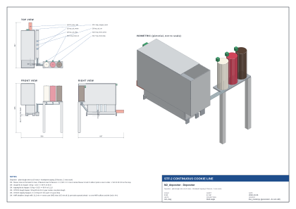
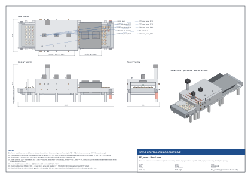
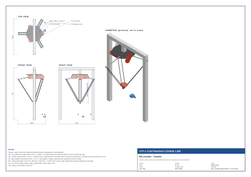
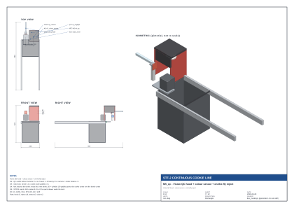
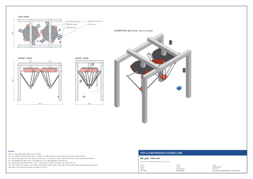
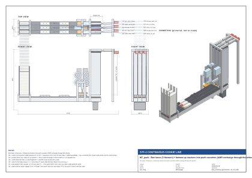
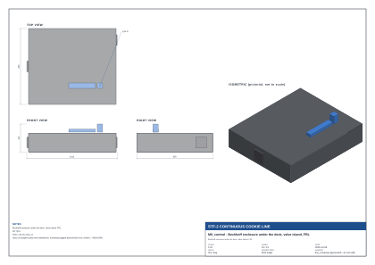
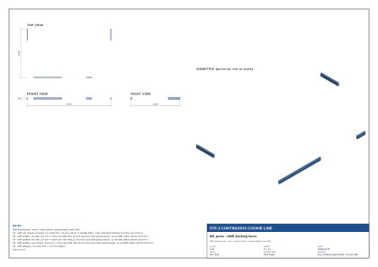
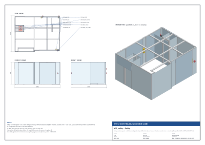